Tools
Creator
Details
Despite the name, Creator isn't for making new content in your scene, but rather taking what's already in it and creating all the metadata your content needs to be published.
Usage
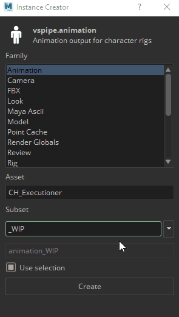
- select what you want to publish from your scenes
- Open Creator from VSPipe menu
- Choose what family (data type) you need to export
- Type the name for you export. This name is how others are going to be able to refer to this particular subset when loading it into their scenes. Every assets should have a _MAIN, _FIN and _WIP subset, but can have any number of other variants.
- Click on Create
Loader
Loader loads published subsets into your current scene or script.
Usage
- open Loader from VSPipe menu
- select the asset where the subset you want to load is published
- from subset list select the subset you want
- right-click the subset
- from action menu select what you want to do (load, reference, ...)
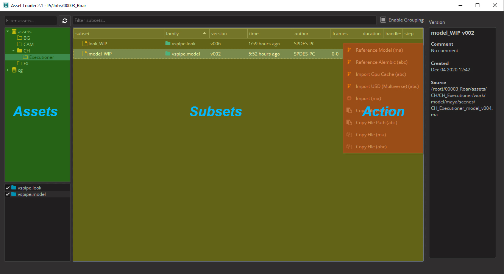
Refresh data
Data are not auto-refreshed to avoid database issues. To refresh assets or subsets press refresh button.
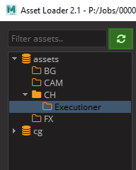
Load another version
Loader by default load last version, but you can of course load another versions. Double-click on the subset in the version column to expose the drop down, choose version you want to load and continue from point 4 of the Usage.
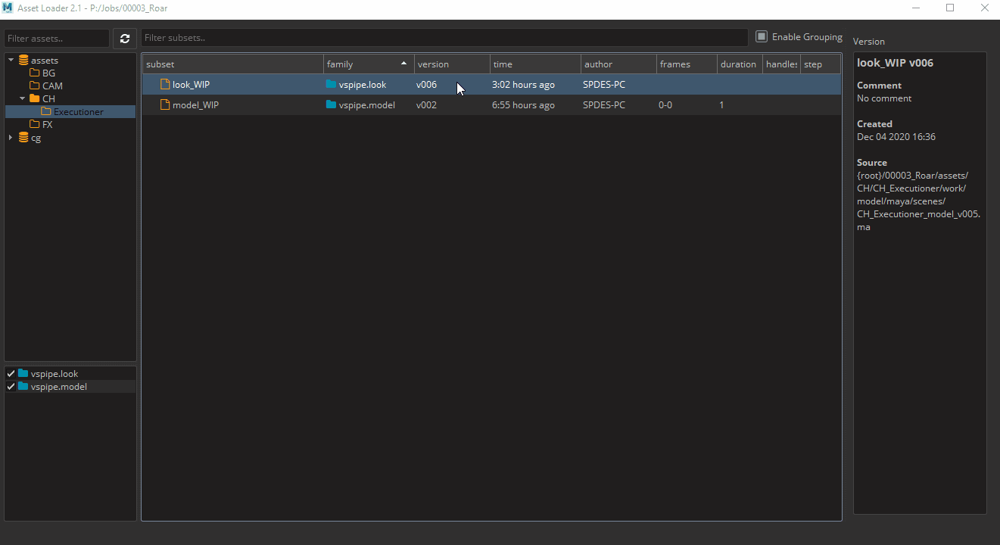
Filtering
Filter Assets and Subsets by name
To filter assets/subsets by name just type name or part of name to filter text input. Only assets/subsets containing the entered string remain.
- Assets filtering example (it works the same for subsets):
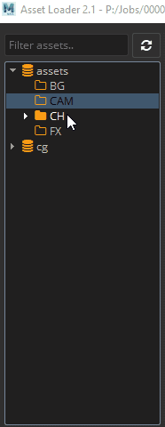
Filter Subsets by Family
To filter subsets by their families you can use families list where you can check families you want to see or uncheck families you are not interested in.
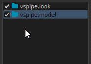
Publisher
Note
Use publish to share your work with others. It collects, validates and exports the data in standardized way.
Details
When you run pyblish, the UI is made of 2 main parts. On the left, you see all the items pyblish will be working with (called instances), and on the right a list of actions that are going to process these items. Even though every task type has some pre-defined settings of what should be collected from the scene and what items will be published by default. You can technically publish any output type from any task type. Each item is passed through multiple plugins, each doing a small piece of work. These are organized into 4 areas and run in sequence.
Using Pyblish
In the best case scenario, you open pyblish from the VSPipe menu, press play, wait for it to finish, and you’re done. These are the steps in detail, for cases, where the default settings don’t work for you or you know that the task you’re working on, requires a different treatment.
Collect
Finds all the important data in the scene and makes it ready for publishing
Validate
Each validator makes sure your output complies to one particular condition. This could be anything from naming conventions, scene setting, to plugin usage. An item can only be published if all validators pass.
Extract
Extractor takes the item and saves it to the disk. Usually to temporary location. Each extractor represents one file format and there can be multiple file formats exported for each item.
Integrate
Integrator takes the extracted files, categorizes and moves them to a correct location on the disk or on the server.
Inventory
With Scene Inventory, you can browse, update and change subsets loaded with Loader into your scene or script.
Details
Once a subset is loaded, it turns into a container within a scene. This containerization allows us to have a good overview of everything in the scene, but also makes it possible to change versions, notify user if something is outdated, replace one asset for another, etc.
The scene manager has a simple GUI focused on efficiency. You can see everything that has been previously loaded into the scene, how many time it's been loaded, what version and a lot of other information. Loaded assets are grouped by their asset name, subset name and representation. This grouping gives ability to apply changes for all instances of the loaded asset (e.g. when tree is loaded 20 times you can easily update version for all of them).
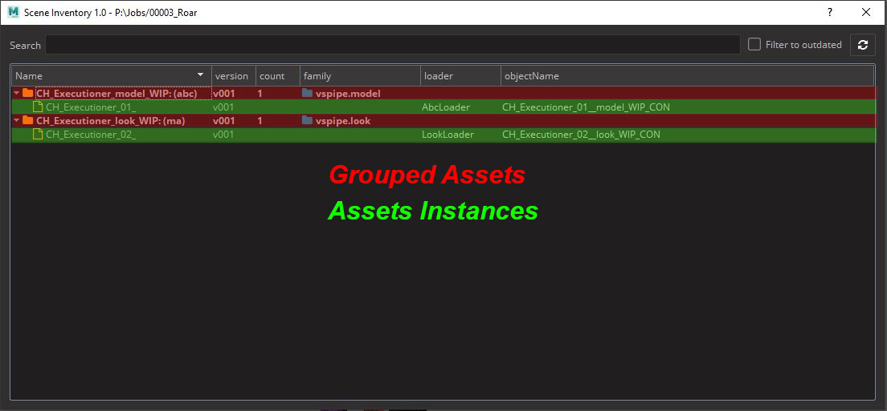
To interact with any container, you need to right click it and you'll see a drop down with possible actions. The key actions for production are already implemented, but more will be added over time.
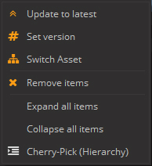
Usage
Change version
You can change versions of loaded subsets with scene inventory tool. Version of loaded assets is colored to red when newer version is available.
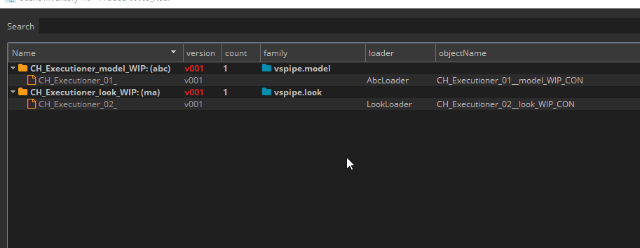
Update to the latest version
Select containers or subsets you want to update, right-click selection and press Update to latest.
Change to specific version
Select containers or subsets you want to change, right-click selection, press Set version, select from dropdown version you want change to and press OK button to confirm.
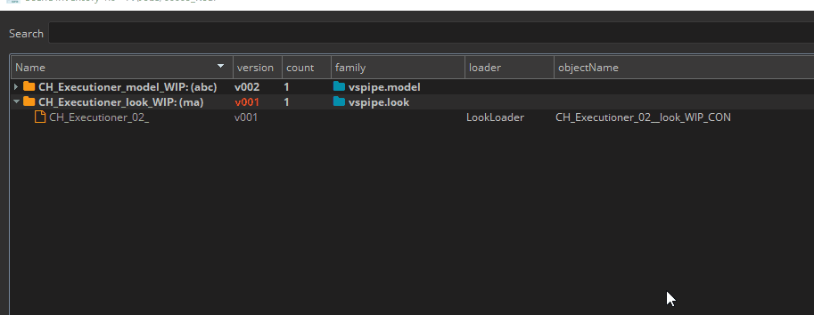
Switch Asset
It's tool in Scene inventory tool that gives ability to switch asset, subset and representation of loaded assets.
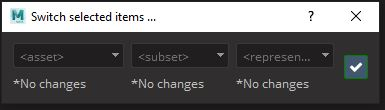
Because loaded asset is in fact representation of version published in asset's subset it is possible to switch each of this part (representation, version, subset and asset), but with limitations. Limitations are obvious as you can imagine when you have loaded .ma representation of modelMain subset from car asset it is not possible to switch subset to modelHD and keep same representation if modelHD does not have published .ma representation. It is possible to switch multiple loaded assets at once that makes this tool very powerful helper if all published assets contain same subsets and representations.
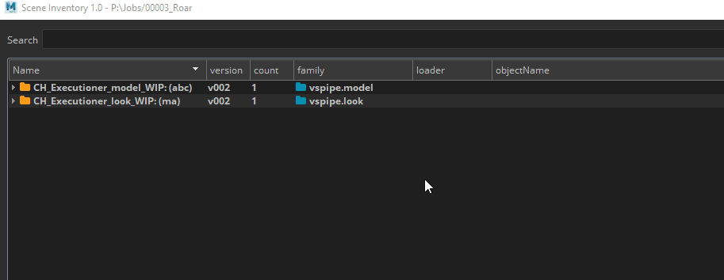
Remove Asset
You can remove Loaded item by right click then remove items.
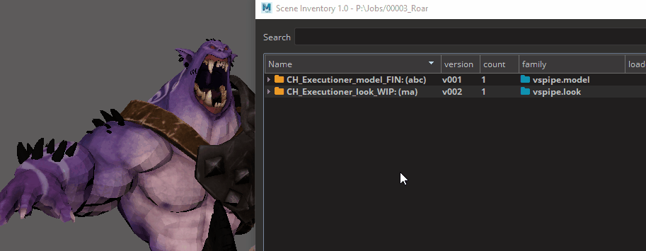
Filtering
Filter by name
There is a search bar on the top for cases when you have a complex scene with many assets and need to find a specific one.
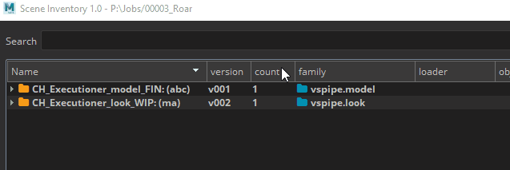
Filter with Cherry-pick selection
To keep only selected subsets right-click selection and press Cherry-Pick (Hierarchy) (Border of subset list change to orange color when Cherry-pick filtering is set so you know filter is applied).
To return to original state right-click anywhere in subsets list and press Back to Full-View.
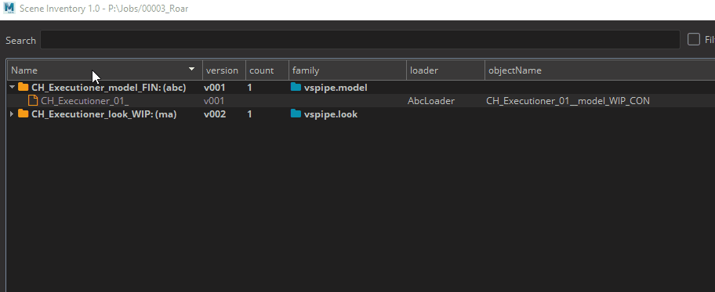
TIP
You can Cherry-pick from Cherry-picked subsets.
Workfiles
Save new working scenes or scripts, or open the ones you previously worked on.
Details
Instead of digging through your software native file browser, you can simply open the workfiles app and see all the files for the asset or shot you're currently working with. The app takes care of all the naming and the location of your work files.
When saving a scene you can also add a comment. It is completely up to you how you use this, however we recommend using it for subversion within your current working version.
Let's say that the last version of the comp you published was v003 and now you're working on the file prj_sh010_compositing_v004.nk if you want to keep snapshots of your work, but not iterate on the main version because the supervisor is expecting next publish to be v004, you can use the comment to do this, so you can save the file under the name prj_sh010_compositing_v004_001 , prj_sh010_compositing_v004_002. the main version is automatically iterated every time you publish something.
Usage
To open existing file:
- Open Workfiles tool from VSPipe menu
- Select file from list - the latest version is the highest (descendent ordering)
- Press
Openbutton or double click
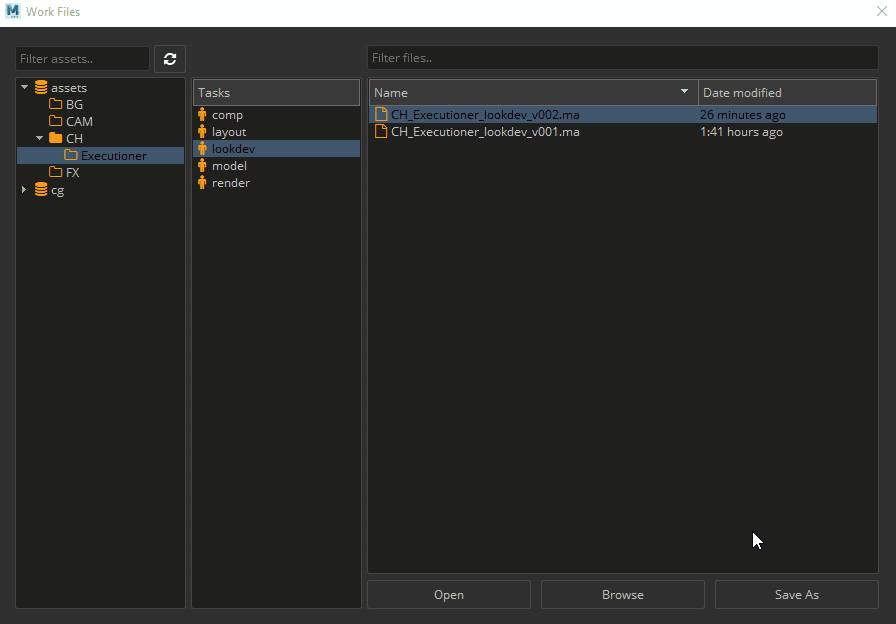
To save new workfile
- Open Workfiles tool from VSPipe menu
- Press
Save Asbutton - You can add optional comment to the filename, that will be appended at the end
- Press
OK
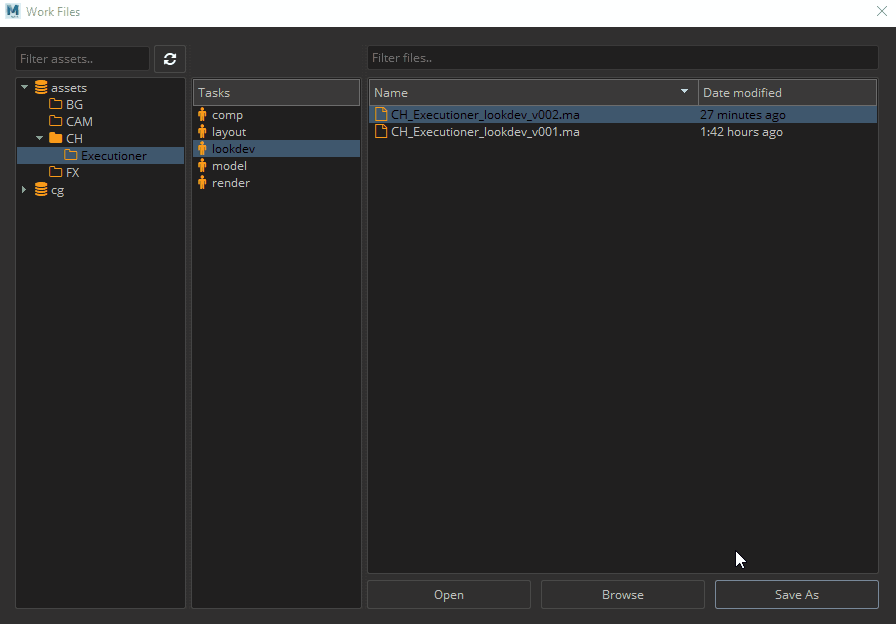
TIP
You can manually override the workfile version by unticking next available version and using the version menu to choose your own.
Look Manager
The Look Manager takes care of assigning published looks to the correct model in the scene.
Details
When a look is published it also stores the information about what shading networks need to be assigned to which models, but it also stores all the render attributes on the mesh necessary for a successful render.
Usage
Look Assigner has GUI is made of two parts. On the left you will see the list of all the available models in the scene and on the right side, all the looks that can be associate with them. To assign a look to a model you just need to:
- Open Look Manager tool from VSPipe_Tools menu under Shading select Look Manager
- Click on "Get All Assets"
- Choose a subset from the menu on the left
- Right click on a look from the list on the right
- Choose "Assign looks"
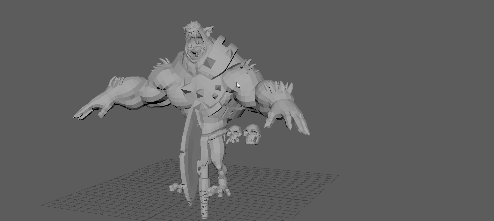
At this point you should have a model with all it's shaders applied correctly. The tool automatically loads the latest look available.